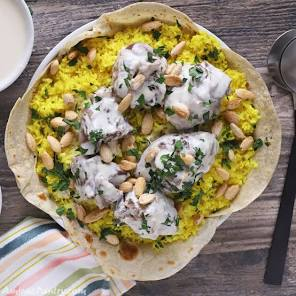

Prepare the Jameed: If using solid jameed, break it into pieces and soak in hot water for several hours or overnight. Blend the softened jameed into a smooth liquid and strain.
Cook the Lamb: Sear the lamb pieces in ghee in a large pot. Cover with water, add onions, cardamom, and bay leaves. Bring to a boil, skim the foam, then simmer on low heat for 1.5 to 2 hours until tender.
Prepare the Yogurt Sauce: In a separate large pot, mix the blended jameed, plain yogurt, a teaspoon of cornstarch (optional, to prevent splitting), and some of the meat broth. Bring to a simmer while stirring constantly.
Combine Meat and Sauce: Add the cooked lamb to the yogurt sauce, simmering together for 10–15 minutes.
Cook the Rice: Wash and soak the rice, then sauté it in ghee and turmeric. Cook using the reserved lamb broth instead of water for extra flavor.